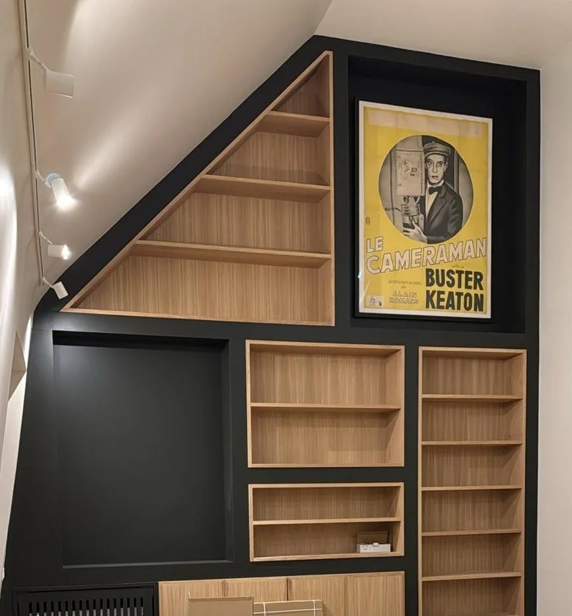

PARIS & ÎLE-DE-FRANCE · EGAR SARL
Travaux de menuiserie à Paris
Des menuiseries adaptées à votre intérieur
Les travaux de menuiserie contribuent au confort, à l’isolation et à l’organisation des espaces. EGAR accompagne les projets de rénovation à Paris et en Île-de-France, du remplacement d’une menuiserie à l’aménagement intérieur. Chaque intervention est définie selon les dimensions, l’état de l’existant et les contraintes du logement.
Nos prestations de menuiserie
- Remplacement de fenêtres et portes-fenêtres, selon les dimensions et les contraintes de pose.
- Pose ou remplacement de portes intérieures, blocs-portes et éléments de fermeture.
- Installation de volets et adaptation des équipements existants.
- Aménagement de placards, dressings et rangements, y compris sous pente.
- Pose ou rénovation de parquet et finitions associées.
- Aménagements intérieurs et éléments de menuiserie intégrés au projet de rénovation.
Un agencement pensé pour chaque pièce
Dans un appartement, les dimensions disponibles et les particularités du bâti demandent des relevés précis. Sous un escalier, dans une entrée ou sous les combles, un rangement bien conçu permet d’utiliser les volumes disponibles. Pour les fenêtres et portes-fenêtres, le choix des produits et les modalités de remplacement doivent également tenir compte de la façade, de la copropriété et des règles applicables.

Exemples de projets de menuiserie
- Remplacer une fenêtre ancienne en tenant compte des dimensions du tableau et des contraintes de pose.
- Installer une porte intérieure ou remplacer un bloc-porte lors d’une rénovation de pièce.
- Créer des rangements pour exploiter un espace sous pente ou une niche.
- Rénover un parquet ou prévoir sa pose dans le cadre d’un réaménagement.
Les étapes d’une intervention
- Échange et relevé : compréhension du besoin, prise des dimensions et examen de l’existant.
- Choix de la solution : définition du type de menuiserie, des finitions et des contraintes techniques.
- Devis et préparation : description des fournitures et de la pose, organisation de l’accès et des protections.
- Pose ou rénovation : dépose éventuelle, installation, réglages et finitions prévus.
- Vérification : contrôle de l’ouverture, de la fermeture, des ajustements et de l’aspect final.
Questions fréquentes sur la menuiserie
EGAR peut-elle remplacer des fenêtres dans un appartement ?
Le remplacement de fenêtres et portes-fenêtres fait partie des prestations présentées par EGAR. La faisabilité dépend des dimensions, du type de menuiserie et des règles de l’immeuble. En copropriété, une autorisation peut être nécessaire, notamment si l’aspect extérieur est modifié.
Peut-on prévoir des placards ou rangements sous pente ?
Oui, ce type d’aménagement peut être étudié à partir des dimensions et de la configuration des lieux. Des photos et un relevé approximatif aident à préparer la visite.
Le parquet peut-il être intégré à une rénovation complète ?
Oui. La pose ou la rénovation du parquet peut être étudiée avec les autres travaux afin de coordonner les niveaux de sol, les plinthes, les portes et les finitions.
Quels éléments fournir pour demander un devis de menuiserie ?
Précisez le type de menuiserie, les dimensions approximatives, le nombre d’éléments, la commune du chantier et le résultat souhaité. Des photos de l’existant et des références de produits, si vous en avez, sont utiles.
Préparer votre demande de devis
Indiquez s’il s’agit de fenêtres, de portes, de volets, de placards, de rangements ou de parquet. Précisez le nombre d’éléments, les dimensions approximatives et les contraintes connues de l’immeuble. Des photos de l’existant facilitent le premier échange.
Parlons de votre projet
EGAR SARL · Plus de 30 ans d’expérience · 17 avenue Gambetta, 75020 Paris.
Intervention à Paris et en Île-de-France · egar@outlook.fr